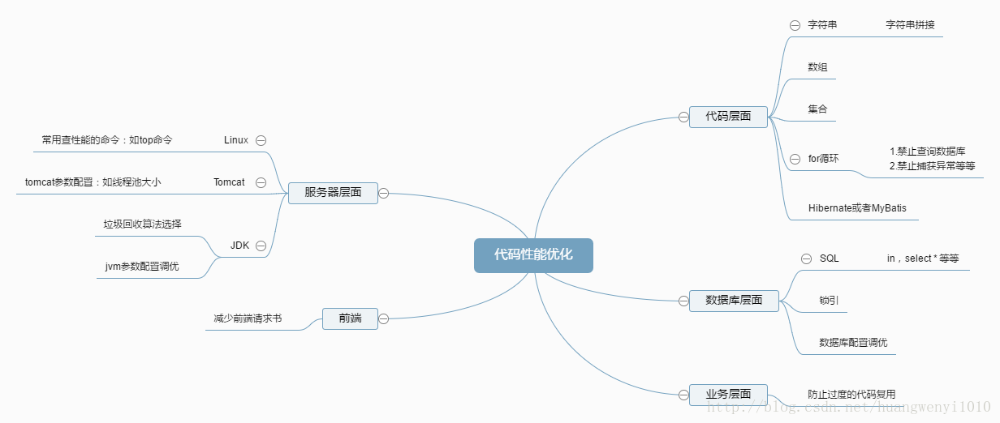

免费Java高级资料需要自己领取，涵盖了Java、Redis、MongoDB、MySQL、Zookeeper、Spring Cloud、Dubbo高并发分布式等教程，一共30G。
传送门：https://mp.weixin.qq.com/s/JzddfH-7yNudmkjT0IRL8Q
前一段时间一直在做性能调优的工作，颇有收获。因此，简单的总结并分享下研究成果。性能调优很有趣但也是个无底洞，不可能在一篇文章全部阐述完。这里只是提供一个方向，以后碰到了知道可以从这些方面入手即可。具体如下

在循环次数比较多的for循环中，我们也不要利用 + 号去拼接字符串。具体例子如下：
程序清单 1-1
@Test
public void test(){
String str = "ay";
for(int i=0;i<Integer.MAX_VALUE;i++){
str = str + i;
}
}
具体解决方法如下：
根据具体的业务场景，使用 StringBuffer（线程安全）或者 StringBuilder（非线程安全）
使用数组
程序清单 1-1
@Test
public void test(){
//第一种解决方法
StringBuilder stringBuilder = new StringBuilder(Integer.MAX_VALUE);
//第二种解决方法
String[] strArray = new String[Integer.MAX_VALUE + 1];
stringBuilder.append("ay");
strArray[0] = "ay";
for(int i=0;i<Integer.MAX_VALUE + 1;i++){
stringBuilder.append("al");
strArray[i + 1] = "al";
}
System.out.println(stringBuilder.toString());
System.out.println(ArrayUtils.toString(strArray));
}
对于 StringBuffer（线程安全）或者 StringBuilder（非线程安全），都有相应的构造方法：
程序清单 1-1
public StringBuilder(int capacity) {
super(capacity);
}
如果我们可以事先知道需要拼接的字符串长度，设置容量参数，防止 StringBuffer 在源码内部进行一系列复杂的内存复制操作，影响性能。
如上面的
StringBuilder stringBuilder = new StringBuilder(Integer.MAX_VALUE);
for (int i = 0, int length = list.size(); i < length; i++)
方法的返回值
返回List：
private List<PcsTaskDTO> sortDecisionAndBackTask(List<PcsTaskDTO> pcsTaskDTOList) throws Exception{
if(CollectionUtils.isEmpty(pcsTaskDTOList)) return null;
}
解决方法：
private List<PcsTaskDTO> sortDecisionAndBackTask(List<PcsTaskDTO> pcsTaskDTOList) throws Exception{
if(CollectionUtils.isEmpty(pcsTaskDTOList)) return Collections.EMPTY_LIST;
}
返回Set：
Collections.EMPTY_SET
返回Map：
Collections.EMPTY_MAP
返回Boolean：
Boolean.TRUE
不要再for循环中查询数据库
解决：
代码部署到生产环境前，去掉全部System.out.println
数组copy有很多种方法，效率不一。我们先看下面具体实例：
程序清单 2-1/**
* 测试4种数组复制效率比较
* @author 阿毅
* @date 2017/2/7.
*/
public class AyTest {
private static final byte[] buffer = new byte[1024*10];
static {
for (int i = 0; i < buffer.length; i++) {
buffer[i] = (byte) (i & 0xFF);
}
}
private static long startTime;
public static void main(String[] args) {
startTime = System.nanoTime();
byte[] newBuffer = new byte[buffer.length];
for(int i=0;i<buffer.length;i++) {
newBuffer[i] = buffer[i];
}
calcTime("forCopy");
startTime = System.nanoTime();
byte[] newBuffer2 = buffer.clone();
calcTime("cloneCopy");
startTime = System.nanoTime();
byte[] newBuffer3 = Arrays.copyOf(buffer, buffer.length);
calcTime("arraysCopyOf");
startTime = System.nanoTime();
byte[] newBuffer4 = new byte[buffer.length];
System.arraycopy(buffer, 0, newBuffer, 0, buffer.length);
calcTime("systemArraycopy");
}
private static void calcTime(String type) {
long endTime = System.nanoTime();
System.out.println(type + " cost " +(endTime-startTime)+ " nanosecond");
}
}
运行结果：
forCopy cost 711576 nanosecond
cloneCopy cost 53490 nanosecond
arraysCopyOf cost 119946 nanosecond
systemArraycopy cost 39712 nanosecond
多运行几次，我们得出数组复制效率：
System.arraycopy > clone > Arrays.copyOf > for
综上所述，当复制大量数据时，使用System.arraycopy()命令。
实现字符串的分割的方法有很多种，常用的是 split ，StringTokenizer ，indexOf 和 substring 的配合，以及一些开源工具类，如：StringUtils。它们各有优缺。
@Test
public void test(){
//数据初始化
StringBuffer sb = new StringBuffer();
for(int i=0;i<10000;i++){
sb.append(i).append(";");
}
String originStr = sb.toString();
//第一种分隔字符方法
long startTime = System.nanoTime();
String[] splitArray = originStr.split(";");
for(int i=0,len = splitArray.length;i<len;i++){
String temp = splitArray[i];
}
long endTime = System.nanoTime();
System.out.println("the cost of split is :" + (endTime - startTime));
//第二种分隔字符方法
System.out.println("--------------------------------------------");
originStr = sb.toString();
startTime = System.nanoTime();
StringTokenizer st = new StringTokenizer(originStr,";");
while(st.hasMoreTokens()){
st.nextToken();
}
endTime = System.nanoTime();
System.out.println("the cost of stringTokenizer is :" + (endTime - startTime));
//第三种分隔字符的方法
System.out.println("--------------------------------------------");
originStr = sb.toString();
startTime = System.nanoTime();
while (true){
int index = originStr.indexOf(";");
if(index < 0) break;
String origin = originStr.substring(0,index);
originStr = originStr.substring(index + 1);
}
endTime = System.nanoTime();
System.out.println("the cost of indexOf is :" + (endTime - startTime));
//第四种分隔字符的方法
System.out.println("--------------------------------------------");
originStr = sb.toString();
startTime = System.nanoTime();
String[] utilSplit = StringUtils.split(originStr,';');
for(int i=0,len = utilSplit.length;i<len;i++){
String temp = utilSplit[i];
}
endTime = System.nanoTime();
System.out.println("the cost of StringUtils.split is :" + (endTime - startTime));
}
运行结果：
the cost of split is :35710479
--------------------------------------------
the cost of stringTokenizer is :11992643
--------------------------------------------
the cost of indexOf is :323050471
--------------------------------------------
the cost of StringUtils.split is :59026333
从上面例子可以看出，字符分割的性能，由高到低的排序为：StringTokenizer > split ，StringUtils.split > indexOf 。有些书籍写着 indexOf 的性能是最高的，但是按照我的测试，index的性能是最差的。但是事物都有两面性，从上面的例子也可以看出，虽然 StringTokenizer 的性能高，但是代码量多，可读性差，而 split 代码相对就整洁多了。
try-catch语句本身性能不高，如果再放到循环体中，无非是雪上加霜。因此在开发中，我们要极力避免。
例：
for(int i=0;i<10;i++){
try{
}catch (Exception e){
}
}
正确做法：
try{
for(int i=0;i<10;i++){
}
}catch (Exception e)
{
}
综上所述：不要再循环体内执行复制，耗时的操作。
锁优化的思路和方法总结一下，有以下几种。
我们应该确保我们只在必要的地方加锁，将锁从方法声明移到方法体中会延迟锁的加载，进而降低了锁竞争的可能性。先看下面的实例：
class SynObj {
//方法锁/或者对象锁
public synchronized void methodA() {
System.out.println("methodA.....");
try {
Thread.sleep(5000);
} catch (InterruptedException e) {
e.printStackTrace();
}
}
public void methodB() {
//对代码块进行锁，降低锁的竞争
synchronized(this) {
System.out.println("methodB.....");
}
}
public void methodC() {
String str = "sss";
//这里锁的是 str 这个对象，而不是 SynObj 对象
synchronized (str) {
System.out.println("methodC.....");
}
}
}
/**
* Created by Ay on 2017/3/26.
*/
public class AyTest {
public static void main(String[] args) {
final SynObj obj = new SynObj();
Thread t1 = new Thread(new Runnable() {
@Override
public void run() {
obj.methodA();
}
});
t1.start();
Thread t2 = new Thread(new Runnable() {
@Override
public void run() {
obj.methodB();
}
});
t2.start();
Thread t3 = new Thread(new Runnable() {
@Override
public void run() {
obj.methodC();
}
});
t3.start();
}
}
打印结果:
methodA.....
methodC.....
//methodB会隔一段时间才会打印出来
methodB.....
总结：因为，一个线程访问了 synchronized 同步代码块中的代码，另一个线程不可以访问该对象的任何同步代码块，但可以访问非同步代码块。所有缩小锁的范围可以在一定程度上提高代码性能。
最常见的锁分离就是读写锁ReadWriteLock，根据功能进行分离成读锁和写锁，这样读读不互斥，读写互斥，写写互斥，即保证了线程安全，又提高了性能。
还有就是网上一个高手写的一个例子：
public class Grocery {
private final ArrayList fruits = new ArrayList();
private final ArrayList vegetables = new ArrayList();
//对象锁，不好，效率低
public synchronized void addFruit(int index, String fruit) {
fruits.add(index, fruit);
}
//对象锁，不好，效率低
public synchronized void removeFruit(int index) {
fruits.remove(index);
}
//对象锁，不好，效率低
public synchronized void addVegetable(int index, String vegetable) {
vegetables.add(index, vegetable);
}
//对象锁，不好，效率低
public synchronized void removeVegetable(int index) {
vegetables.remove(index);
}
}
优化后：
public class Grocery {
private final ArrayList fruits = new ArrayList();
private final ArrayList vegetables = new ArrayList();
public void addFruit(int index, String fruit) {
//水果锁
synchronized(fruits) fruits.add(index, fruit);
}
public void removeFruit(int index) {
//水果锁
synchronized(fruits) {fruits.remove(index);}
}
public void addVegetable(int index, String vegetable) {
//蔬菜锁
synchronized(vegetables) vegetables.add(index, vegetable);
}
public void removeVegetable(int index) {
//蔬菜锁
synchronized(vegetables) vegetables.remove(index);
}
}
直接批量保存3万多条数据。
List<PcsTestcase> pcsTestcases = new ArrayList<>();
// ......
//直接调用批量保存
this.batchCreate(pcsTestcases);
批量保存时，利用UUID生成工具，给主键设置Id。找出Hibernate的先查询后更新的机制触发，造成不必要的查询损耗。
List<PcsTestcase> pcsTestcases = new ArrayList<>();
PcsTestcase pcsTestcase = null;
for (int j = sheet.getFirstRowNum() + 1,len = sheet.getLastRowNum(); j <= len;j++) {
Row row = sheet.getRow(j);
if (row == null) continue;
pcsTestcase = new PcsTestcase();
//看这里，重要：这里在插入数据时，设置主键Id
pcsTestcase.setId(UUIDUtils.generate());
pcsTestcase.setPmMilestoneId(pcsMainTask.getId());
}
对于问题二，我们可以把所有数据，每500条进行一次批量保存操作，速度会比一次性批量保存好。具体如下：
if(j % 500 == 0 || j == len){
this.batchCreate(pcsTestcases);
pcsTestcases = new ArrayList<>();
}
对于问题三，由于Hibernate在进行插入时，会判断数据是进行插入还是进行更新。如果模型的主键不为空，查询数据后，再进行更新数据，否则，进行插入数据操作。因此，我们在进行插入操作时候，不要设置模型的主键，可以避免不必要查询消耗。
pcsTestcase.setId(UUIDUtils.generate());
业务层面
数据库层面
我们在写SQL的时候，通常会出现大小写混用的情况。如下：
select * FROM pm_testcase pt where pt.Name = 'ay'
正确的做法是SQL语句全部大写或者全部小写。如下：
-- 全部小写select * from pm_testcase pt where pt.name = 'ay'
-- 全部大写
SELECT * FROM PM_TESTCASE PT WHERE PT.NAME = 'ay'
PostgreSQL的执行计划，做为数据库性能调优的利器，有必要在开头简单的介绍下。
explain analyse select * from pm_testcase pt
--执行计划
Seq Scan on pm_testcase pt (cost=0.00..5237.11 rows=60011 width=2020) (actual time=37.347..435.601 rows=60012 loops=1)
Planning time: 0.426 ms
Execution time: 438.442 ms
cost说明：
通过查看执行计划，我们就能够找到SQL中的哪部分比较慢，或者说花费时间多。然后重点分析哪部分的逻辑，比如减少循环查询，或者强制改变执行计划。
更多执行计划 Explain，可网上搜索。
首先，在数据库里有一张表 pm_testcase，里面有150万条数据。
如下SQL，我们利用执行计划，对创建时间（created_time）进行排序，输出执行计划结果。
程序清单 2-1explain
select * from pm_testcase pt
order by pt.created_time desc
--Sort (cost=4103259.72..4107084.44 rows=1529885 width=1920)
--Sort Key: created_time
---> Seq Scan on pm_testcase pt (cost=0.00..134087.85 rows=1529885 width=1920)
cost=说明：
第一个数字4103259.72表示启动cost，这是执行到返回第一行时需要的cost值。
第二个数字4107084.44表示执行整个SQL的cost。
该语句总共耗时 4107084.44
这里我们创建 created_time 索引，对相同语句执行 程序清单 2-1 的SQL，得到的执行计划结果为：
Index Scan Backward using idx_create_time on pm_testcase pt (cost=0.43..384739.28 rows=1530024 width=1920)
很明显，执行整个SQL的 cost 由 4107084.44 减少到 384739.28
因此，为了避免全表扫描，建议在考虑在 where 及 order by 涉及的列上建立索引。
我们应尽量避免在 where 子句中使用 != 或 <> 操作符，否则引擎将放弃使用索引而进行全表扫描。
如下例子，我们在 pm_testcase 的 code 上添加了索引：
explain select pt.code from pm_testcase pt
where pt.code != 'case005510'
--执行计划，Seq Scan 全表扫描
Seq Scan on pm_testcase pt (cost=0.00..137914.30 rows=1529973 width=11)
explain select pt.code from pm_testcase pt
where pt.code = 'case005510'
--执行计划，Bitmap Heap Scan 索引扫描
Bitmap Heap Scan on pm_testcase pt (cost=4.82..206.29 rows=51 width=11)
通过上面的例子可以看出，!= 操作符使得索引失效。
索引并不是越多越好，索引固然可以提高相应的 select 的效率，但同时也降低了 insert 和 update 的效率，因为 insert 或 update 时有可能会重建索引，所以视具体情况而定。一个表的索引数最好不要超过7个，若太多则应考虑一些不常使用到的列上建的索引是否有必要.
如果你的应用程序有很多JOIN查询，你应该确认两个表中Join的字段是被建过索引的。这样，SQL内部会启动为你优化Join的SQL语句的机制。而且，这些被用来Join的字段，应该是相同的类型的。例如：如果你要把 DECIMAL 字段和一个 INT 字段 Join 在一起，SQL 就无法使用它们的索引。对于那些STRING 类型，还需要有相同的字符集才行。（两个表的字符集有可能不一样）程序员站
子查询很灵活可以极大的节省查询的步骤，但是子查询的执行效率不高。执行子查询时数据库需要为内部嵌套的语句查询的结果建立一个临时表，然后再使用临时表中的数据进行查询。查询完成后再删除这个临时表，所以子查询的速度会慢一点。
我们可以使用join语句来替换掉子查询，来提高效率。join语句不需要建立临时表，所以其查询速度会优于子查询。大部分的不是很复杂的子查询都可以替换成join语句。
服务器的调优，就得根据客户提供的真实环境的配置。如服务器是几核几个CPU等等。服务器的硬件指标确定下来后，根据指标调整Tomcat，JDK，数据库，Apatch等配置参数。让整个环境达到最优的效果。这块工作一般不是开发人员进行的。但是我们要了解清楚一些配置参数
ubuntu@ubuntu:~$ dmesg | tail
[38060.138072] e1000: eno16777736 NIC Link is Down
[38068.362442] e1000: eno16777736 NIC Link is Up 1000 Mbps Full Duplex, Flow Control: None
[38070.366445] e1000: eno16777736 NIC Link is Down
[38076.376947] e1000: eno16777736 NIC Link is Up 1000 Mbps Full Duplex, Flow Control: None
[38084.386812] e1000: eno16777736 NIC Link is Down
[38090.411818] e1000: eno16777736 NIC Link is Up 1000 Mbps Full Duplex, Flow Control: None
[38480.597723] e1000: eno16777736 NIC Link is Down
[38495.064487] e1000: eno16777736 NIC Link is Up 1000 Mbps Full Duplex, Flow Control: None
[38607.910407] IPv6: ADDRCONF(NETDEV_UP): eno16777736: link is not ready
[38607.978329] e1000: eno16777736 NIC Link is Up 1000 Mbps Full Duplex, Flow Control: None
命令会输出系统日志的最后10行。这些日志可以帮助排查性能问题。
top命令是进行性能分析最常使用的命令，也是最重要的命令。每个参数代表什么意思，都必须非常清楚。
top - 07:01:15 up 10:57, 3 users, load average: 0.00, 0.04, 0.13
Tasks: 238 total, 1 running, 237 sleeping, 0 stopped, 0 zombie
%Cpu(s): 3.4 us, 3.8 sy, 0.0 ni, 92.8 id, 0.0 wa, 0.0 hi, 0.0 si, 0.0 st
KiB Mem: 2040024 total, 2020312 used, 19712 free, 11220 buffers
KiB Swap: 3142652 total, 927204 used, 2215448 free. 121276 cached Mem
PID USER PR NI VIRT RES SHR S %CPU %MEM TIME+ COMMAND
6844 root 20 0 333020 20520 3600 S 6.0 1.0 29:48.44 Xorg
61687 ubuntu 20 0 1635056 43716 18108 S 3.6 2.1 5:00.27 compiz
5444 ubuntu 20 0 3765292 875688 10020 S 2.7 42.9 42:13.69 java
6788 root 20 0 293028 9284 1112 S 2.3 0.5 0:51.92 dockerd
5175 ubuntu 20 0 578736 22496 14888 S 1.7 1.1 0:04.60 gnome-terminal-
27 root 39 19 0 0 0 S 0.7 0.0 0:09.02 khugepaged
7932 ubuntu 20 0 3060636 16560
top命令包含了前面好几个命令的检查的内容。比如系统负载情况（uptime）、系统内存使用情况（free）、系统CPU使用情况（vmstat）等。因此通过这个命令，可以相对全面的查看系统负载的来源。同时，top命令支持排序，可以按照不同的列排序，方便查找出诸如内存占用最多的进程、CPU占用率最高的进程等。
但是，top命令相对于前面一些命令，输出是一个瞬间值，如果不持续盯着，可能会错过一些线索。这时可能需要暂停top命令刷新，来记录和比对数据。
第一行：
top - 07:01:15 up 10:57, 3 users, load average: 0.00, 0.04, 0.13
解释：
07:01:15 当前时间
up 10:57 系统运行时间，格式为时:分
3 user 当前登录用户数
load average: 0.00, 0.04, 0.13 系统负载，即任务队列的平均长度。三个数值分别为 1分钟、5分钟、15分钟前到现在的平均值。第二行和第三行，当有多个CPU时，这些内容可能会超过两行。内容如下：
total 进程总数
running 正在运行的进程数
sleeping 睡眠的进程数
stopped 停止的进程数
zombie 僵尸进程数
Cpu(s):
3.4% us 用户空间占用CPU百分比
3.8% sy 内核空间占用CPU百分比
0.0% ni 用户进程空间内改变过优先级的进程占用CPU百分比
92.8% id 空闲CPU百分比
0.0% wa 等待输入输出的CPU时间百分比
0.0%hi：硬件CPU中断占用百分比
0.0%si：软中断占用百分比
0.0%st：虚拟机占用百分比
最后两行为内存信息。内容如下：
Mem:
2040024 total 物理内存总量
2020312 used 使用的物理内存总量
17616k free 空闲内存总量
11220 buffers 用作内核缓存的内存量
Swap:
3142652 total 交换区总量
927204 used 使用的交换区总量
2215448 free 空闲交换区总量
121276 cached 缓冲的交换区总量,内存中的内容被换出到交换区，而后又被换入到内存，但使用过的交换区尚未被覆盖，该数值即为这些内容已存在于内存中的交换区的大小,相应的内存再次被换出时可不必再对交换区写入。
进程信息区统计信息区域的下方显示了各个进程的详细信息。首先来认识一下各列的含义。
序号 列名 含义
a PID 进程id
b PPID 父进程id
c RUSER Real user name
d UID 进程所有者的用户id
e USER 进程所有者的用户名
f GROUP 进程所有者的组名
g TTY 启动进程的终端名。不是从终端启动的进程则显示为 ?
h PR 优先级
i NI nice值。负值表示高优先级，正值表示低优先级
j P 最后使用的CPU，仅在多CPU环境下有意义
k %CPU 上次更新到现在的CPU时间占用百分比
l TIME 进程使用的CPU时间总计，单位秒
m TIME+ 进程使用的CPU时间总计，单位1/100秒
n %MEM 进程使用的物理内存百分比
o VIRT 进程使用的虚拟内存总量，单位kb。VIRT=SWAP+RES
p SWAP 进程使用的虚拟内存中，被换出的大小，单位kb。
q RES 进程使用的、未被换出的物理内存大小，单位kb。RES=CODE+DATA
r CODE 可执行代码占用的物理内存大小，单位kb
s DATA 可执行代码以外的部分(数据段+栈)占用的物理内存大小，单位kb
t SHR 共享内存大小，单位kb
u nFLT 页面错误次数
v nDRT 最后一次写入到现在，被修改过的页面数。
w S 进程状态(D=不可中断的睡眠状态,R=运行,S=睡眠,T=跟踪/停止,Z=僵尸进程)
x COMMAND 命令名/命令行
y WCHAN 若该进程在睡眠，则显示睡眠中的系统函数名
z Flags 任务标志，参考 sched.h
查询登录当前系统的用户信息：w命令
ubuntu@ubuntu:~$ w
20:15:44 up 11:17, 3 users, load average: 0.21, 0.16, 0.16
USER TTY FROM LOGIN@ IDLE JCPU PCPU WHAT
ubuntu :0 :0 Thu00 ?xdm? 30:09 1.63s /sbin/upstart --user
ubuntu pts/7 :0 Thu23 45:01m 42:57 8.80s /home/ubuntu/inno/idea-IU-162.2032.8/bin/fsnotifier64
ubuntu pts/18 :0 06:47 0.00s 0.47s 0.05s w
可查询登录当前系统的用户信息，以及这些用户目前正在做什么操作
运行时，如果出现下面的提示信息
ubuntu@ubuntu:~$ iostat
The program 'iostat' is currently not installed. You can install it by typing:
sudo apt-get install sysstat
执行下 sudo apt-get install sysstat 即可。
Iostat提供三个报告：CPU利用率、设备利用率和网络文件系统利用率，使用-c，-d和-h参数可以分别独立显示这三个报告。
ubuntu@ubuntu:~$ free -m
total used free shared buffers cached
Mem: 1992 672 1320 6 22 209
-/+ buffers/cache: 440 1552
Swap: 3068 403 2665
free: 查看系统内存的使用情况，-m参数表示按照兆字节展示。
最后两列分别表示用于IO缓存的内存数，和用于文件系统页缓存的内存数。需要注意的是，第二行-/+ buffers/cache，看上去缓存占用了大量内存空间。这是Linux系统的内存使用策略，尽可能的利用内存，如果应用程序需要内存，这部分内存会立即被回收并分配给应用程序。因此，这部分内存一般也被当成是可用内存。如果可用内存非常少，系统可能会动用交换区（如果配置了的话），这样会增加IO开销（可以在iostat命令中提现），降低系统性能。
显示每个CPU的占用情况，如果有一个CPU占用率特别高，那么有可能是一个单线程应用程序引起的。
ubuntu@ubuntu:~$ mpstat -P ALL 1
Linux 4.2.0-16-generic (ubuntu) 04/30/2017 _x86_64_ (2 CPU)
10:57:30 PM CPU %usr %nice %sys %iowait %irq %soft %steal %guest %gnice %idle
10:57:31 PM all 1.52 0.00 0.51 0.00 0.00 0.51 0.00 0.00 0.00 97.47
10:57:31 PM 0 3.03 0.00 0.00 0.00 0.00 0.00 0.00 0.00 0.00 96.97
10:57:31 PM 1 0.00 0.00 0.00 0.00 0.00 1.02 0.00 0.00 0.00 98.98
前端
由于我不是做前端的工作，所以没有太多的经验总结。不过代码方面性能优化有些是可以运用到前端。同事也可以减少前端的请求链接等等手段去优化。这里由于本人不了解，不做过多的阐述。
作者：阿_毅
原文链接：https://blog.csdn.net/huangwenyi1010/article/details/72673447